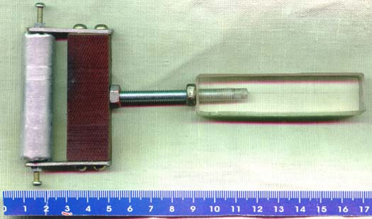
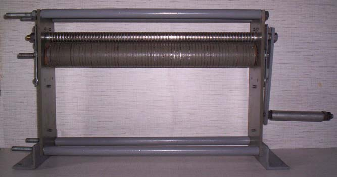
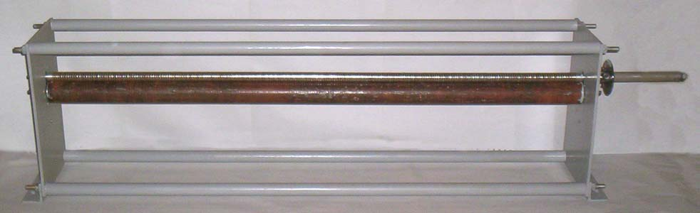
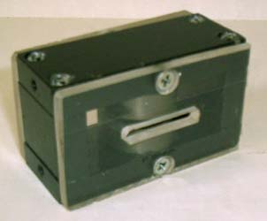
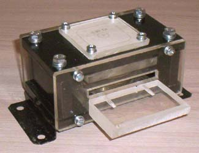

Магнитные системы для намагничивания
постоянных магнитов
Введение
Обычно для намагничивания постоянных магнитов
применяются установки импульсного намагничивания [5]
и электромагниты [2]. В
некоторых случаях задачу удается проще, дешевле и надежнее решить, используя в
качестве намагничивающих устройств магнитные системы на основе постоянных
магнитов. Имеющиеся постоянные магниты состава неодим-железо-бор с остаточной
индукцией более 1 Тл и коэрцитивной силой по намагниченности порядка 1000 кА/м
[3] позволяют создавать в небольших объемах
магнитные поля, пригодные для намагничивания постоянных магнитов на основе
альнико, ферритов и редкоземельных металлов. В частности, таким образом можно
производить многополюсное намагничивание листовых магнитопластов
[1]. Важным достоинством подобных систем является отсутствие затрат
энергии на создание магнитного поля, что снимает проблему нагрева и повышает
производительность.
Практические конструкции магнитных
систем
Валик для
многополюсного одностороннего намагничивания листовых магнитопластов толщиной до
3 мм с ферритовым наполнителем

- Способ нанесения магнитных полюсов - вручную или
автоматически при использовании дополнительного оборудования
- Ширина валика - 60 мм
- Ширина зоны намагничивания (за один проход) - 50 мм
- Количество полюсов в пределах ширины рабочей зоны - 8,
полярность полюсов чередуется
- Ширина полюса - 2 мм
- Расстояние между центрами соседних полюсов - 6 мм
- Магнитная индукция в рабочем зазоре - 0.6 ... 0.7 Тл
Валки для непрерывного
многополюсного одностороннего намагничивания листовых магнитопластов (ширина до
400 мм, толщина до 5 мм) с ферритовым наполнителем

- Способ прокатки листового магнитопласта - вручную или
автоматически при использовании внешнего привода
- Ширина зоны намагничивания валков - 400 мм
- Максимальные размеры намагничиваемого листового образца -
длина любая, ширина до 400 мм, толщина до 5 мм
- Рабочая температура образца до 80 0C
- Скорость вращения валков до 120 об./мин, скорость
протяжки образца при этом до 7 м/мин
- Результат намагничивания - магнитные полюса в виде
параллельных полос с чередующейся полярностью
- Ширина полюса - 2 мм
- Расстояние между центрами соседних полюсов - 6 мм
- Магнитная индукция в рабочем зазоре - 0.6 ... 1.0 Тл в
зависимости от величины зазора
- Габаритные размеры валков (без ручки) - 530 х 160 х 300
мм3
- Масса валков не более 10 кг
Валки для
непрерывного многополюсного одностороннего намагничивания листовых
магнитопластов (ширина до 1050 мм, толщина до 5 мм) с ферритовым наполнителем

- Способ прокатки листового магнитопласта - вручную или
автоматически при использовании электропривода
- Ширина зоны намагничивания валков - 1050 мм
- Максимальные размеры намагничиваемого листового образца -
длина любая, ширина до 1050 мм, толщина до 5 мм
- Рабочая температура образца до 80 0C
- Скорость вращения валков до 120 об./мин, скорость
протяжки образца при этом до 7.5 м/мин
- Результат намагничивания - магнитные полюса в виде
параллельных полос с чередующейся полярностью
- Ширина полюса - 2 мм
- Расстояние между центрами соседних полюсов - 5 мм
- Магнитная индукция в рабочем зазоре - 0.6 ... 1.0 Тл в
зависимости от величины зазора
- Габаритные размеры валков (без ручки) - 1400 х 200 х 350
мм3
- Масса валков не более 25 кг
Магнитная
система с индукцией до 2.5 Тл в зазоре между полюсами диаметром 3 мм

Может использоваться для намагничивания (в основном
одноосного, в некоторых случаях многополюсного) спеченных постоянных магнитов и
магнитопластов на основе алнико, ферритов, редкоземельных металлов.
-
диаметр полюсных наконечников по краям зазора 3 мм
-
магнитный зазор регулируется от 0 до 6 мм подбором прокладок
-
магнитная индукция в центре зазора шириной 1 мм 2.34 Тл
-
магнитная индукция в центре зазора шириной 2 мм 1.83 Тл
-
габаритные размеры: высота 110 мм, ширина 40 мм, глубина 80
мм
-
масса не более 1.6 кг
Магнитная
система с индукцией около 1 Тл в объеме диаметром 20 мм высотой 5 мм

Может использоваться для одноосного намагничивания спеченных
постоянных магнитов и магнитопластов на основе ални, алнико, ферритов.
Характеристики реализованной магнитной системы
приведены ниже:
-
размер зоны однородного магнитного поля: диаметр 20 мм,
высота 5 мм
-
магнитная индукция в зоне однородности 0.92 Тл + 5 %
-
габаритные размеры: высота 45 мм, ширина 80 мм, глубина 40 мм
-
масса не более 0.7 кг
Магнитная система с индукцией около
1 Тл в объеме диаметром 40 мм высотой 8 мм

Может использоваться для одноосного намагничивания спеченных
постоянных магнитов и магнитопластов на основе ални, алнико, ферритов.
Характеристики реализованной магнитной системы
приведены ниже:
-
размер зоны однородного магнитного поля: диаметр 40 мм,
высота 8 мм
-
магнитная индукция в зоне однородности 0.90 Тл + 5 %
-
габаритные размеры: высота 75 мм, ширина 170 мм, глубина 90
мм
-
масса не более 2.7 кг
Для измерения
параметров магнитных систем использовались тесламетры [4].
Производятся разработки новых конструкций магнитных систем.
Ссылки:
- Изготовление и
применение магнитопластов (магнитоэластов)
-
Малогабаритный электромагнит для получения
постоянного однородного магнитного поля с магнитной индукцией до 1.5 Тл
- Постоянные магниты: Справочник / Альтман А. Б., Герберг
А. Н., Гладышев П. А. и др.; Под ред. Ю. М. Пятина. - 2-е изд., перераб. и
доп. - М.: Энергия, 1980. - 488 с., ил.
- Приборы для
измерения магнитных полей
- Установки
импульсного намагничивания и размагничивания постоянных магнитов
Словарь
терминов:
-
Ални, альни (англ. Alni) - магнитотвердый сплав
алюминия, никеля и железа, получаемый методами литья или порошковой
металлургии. Свойства и обозначение зависят от соотношения элементов и
способа получения. Применяется для изготовления постоянных магнитов. См.
также ЮНД, ЮНДК.
-
Алнико, альнико (англ. Alnico) - магнитотвердый сплав
алюминия, никеля, кобальта и железа, получаемый методами литья или
порошковой металлургии. Свойства и обозначение зависят от соотношения
элементов и способа получения. Применяется для изготовления постоянных
магнитов. См. также ЮНД, ЮНДК.
-
Коэрцитивная сила по намагниченности - напряженность
размагничивающего поля, которое должно быть приложено к предварительно
намагниченному образцу, чтобы его намагниченность стала равна нулю.
-
Магнитная индукция - вектор, численно равный пределу отношения
силы, действующей со стороны магнитного поля на элемент проводника с
электрическим током, к произведению тока и длины элемента проводника, если
длина этого элемента стремится к нулю, а элемент так расположен в поле, что
этот предел имеет наибольшее значение, и направленный перпендикулярно к
направлению элемента проводника и к направлению силы, действующей на этот
элемент со стороны магнитного поля, причем из его конца вращение по
кратчайшему расстоянию от направления силы к направлению тока в элементе
проводника должно быть видно происходящим против часовой стрелки.
-
Магнитная система - магнитная цепь.
-
Магнитопласт - полимерный постоянный магнит, изготовленный на
основе смеси магнитотвердого порошка и связующего полимера.
-
Намагничивание - воздействие на образец магнитным полем, вследствие
которого у образца появляется отличная от нуля остаточная намагниченность.
-
Неодим-железо-бор (англ. Ne-Fe-B) - магнитотвердый материал на
основе соединения железа, неодима и бора состава Nd2Fe14B,
Nd3Fe16B, Nd4Fe28B3
-
Остаточная индукция - величина магнитной индукции, сохраняющейся в
образце после уменьшения напряженности внешнего поля до нуля.
- Постоянный магнит - объект, создающий
магнитное поле за счет собственных внутренних элементарных электрических
токов, текущих без использования внешнего источника энергии в составляющем
объект материале.
-
Тесламетр (гауссметр) - прибор для измерения магнитной индукции.
-
Феррит
- двойной окисел состава MeO·Fe2O3, где Me - металл
(например, Ni - никель, Mn - марганец, Ba - барий, Co - кобальт, Sr -
стронций), а Fe2O3 - окись железа.
16.06.2009
22.06.2009
14.08.2009
18.02.2019
Альтернативные источники
энергии
Компьютеры и
Интернет
Магнитные поля
Механотронные системы
Перспективные
разработки
Электроника и
технология
Главная страница